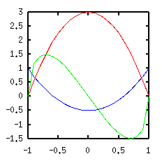
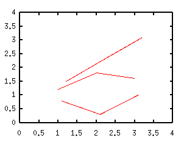
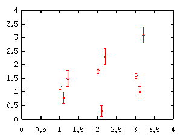
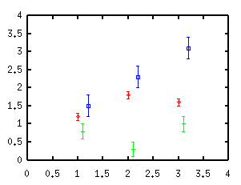
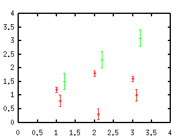
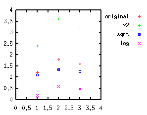
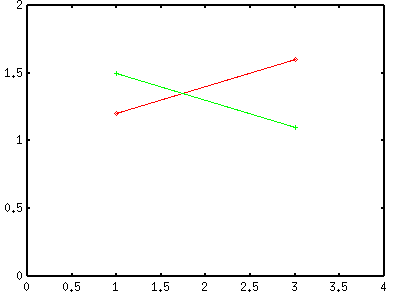
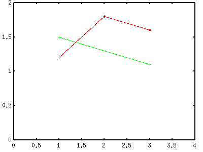
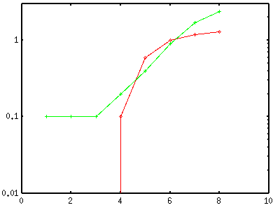
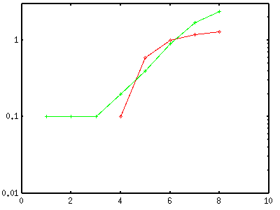

<!DOCTYPE HTML PUBLIC "-//W3C//DTD HTML 4.01 Transitional//EN">
<html lang="ja">
<head>
<title> gnuplot / datafile (2)</title>
<!-- Generated 1999/ 8/31 -->
<!-- $Id: datafile2.html,v 1.17 2005/11/20 08:04:36 kawano Exp $ -->
<meta http-equiv="content-type" content="text/html;charset=iso-2022-jp">
<meta http-equiv="content-style-type" content="text/css">
<link rel="stylesheet" href="style-new.css" type="text/css">
</head>
<body>
<table width="100%" border="0" cellpadding="0" cellspacing="0">
<tr><td bgcolor="#cccc90" width="320">
    <div align="left">
    <a href="index.html">
    
    </a></div></td>
    <td bgcolor="#cccc90">
      <div align="center"><h3> - not so Frequently Asked Questions - </h3> </div>
      <div class="update"> update 2008/08/21 </div>
    </td>
</tr>
<tr><td bgcolor="#fae8ba"></td>
    <td bgcolor="#fae8ba"><div class="navi"> 
<a href="index.html">           HOME </a> |
<a href="intro/index.html">     INTRODUCTION </a> |
<a href="general.html">         INFORMATION </a> |
<a href="gallery/index.html">   GALLERY </a> |
<a href="datafile2-e.html">     ENGLISH </a>
</div></td></tr>
</table>
<hr class="topsep">


<table width="100%" border="0" cellpadding="0" cellspacing="0">
<tr><td id="menu">
 <p> not so FAQ</p>
  <ul>
    <li><a href="legend.html">      $BK^Nc(B(Legend) </a>
    <li><a href="tics.html">        $BL\@9(B(Tics) </a>
    <li><a href="label.html">       $B%i%Y%k(B(Label) </a>
    <li><a href="plot1.html">       2$B<!85%W%m%C%H(B </a>
    <li><a href="plot3d.html">      3$B<!85%W%m%C%H(B </a>
    <li><a href="polar.html">       $B6K:BI8%W%m%C%H(B </a>
    <li><a href="parametric.html">  $BG^2pJQ?tI=<((B </a>
    <li><a href="datafile.html">    $B%G!<%?%U%!%$%k$N?tCM(B </a>
    <ul>
      <li><a href="datafile.html#7.1">
           $B%G!<%?%U%)!<%^%C%H(B </a>
      <li><a href="datafile2.html#7.2">
           $BJ#?t$N%G!<%?$r%W%m%C%H(B</a>
      <li><a href="datafile2.html#7.3">
           $B?tCM$N=$@5(B </a>
      <li><a href="datafile2.html#7.4">
           $B%G!<%?$H%3%^%s%I$N6&B8(B </a>
      <li><a href="datafile2.html#7.5">
           $B%G!<%?$r%9%-%C%W(B </a>
      <li><a href="datafile2.html#7.6">
           $B0lIt$r%W%m%C%H(B</a>
      <li><a href="datafile3.html#7.7">
           UNIX$B$N%3%^%s%I(B </a>
      <li><a href="datetime.html">
           $BF|IU(B/$B;~4V7?%G!<%?(B </a>
    </ul>
    <li><a href="postproc.html">    $B?^$rIA$$$?$=$N8e$O(B</a>
    <li><a href="misc1.html">       $B$=$NB>(B </a>
  </ul>
 <br>
</td>


<td id="content">


<h1><a name="top"> $B%G!<%?%U%!%$%k$N?tCM$N%W%m%C%H(B ($B$=$N(B2) </a></h1>

<div align="center">
<a href="datafile.html">  1 </a> | 
<a href="datafile2.html"> 2 </a> | 
<a href="datafile3.html"> 3 </a> |
<a href="datetime.html">  4 </a>
</div>


<h2><a name="7.2">$B0l$D$N%U%!%$%k$KF~$C$?J#?t$N%G!<%?$r%W%m%C%H$9$k$K$O!)(B</a></h2>

<p> $B0l$D$N%U%!%$%k$KJ#?t$N%G!<%?$r=q$$$F$=$l$i$rF1;~$K%W%m%C%H$9$k$K$O!$(B
using$B$H(Bindex$B$r;H$$$^$9!%(B</p>

<p>X$B:BI8$,F1$8$G(BY$B:BI8$,0[$J$k%G!<%?$r%W%m%C%H$9$k$H$-$O!$%G!<%?$rI=7A(B
$B<0$GI=$7$F!$(Busing$B$G%W%m%C%H$9$k%G!<%?$r;XDj$9$k$N$,4JC1$G$9!%(B</p>

<pre class="file">
#   X         Y1         Y2         Y3
   -1.0000    0.0000     0.0000     1.0000
   -0.9000    0.5700     1.1769     0.7150
   -0.8000    1.0800     1.4400     0.4600
   -0.7000    1.5300     1.4997     0.2350
   -0.6000    1.9200     1.4400     0.0400
   -0.5000    2.2500     1.2990    -0.1250
   -0.4000    2.5200     1.0998    -0.2600
   -0.3000    2.7300     0.8585    -0.3650
   -0.2000    2.8800     0.5879    -0.4400
   -0.1000    2.9700     0.2985    -0.4850
    0.0000    3.0000    -0.0000    -0.5000
    0.1000    2.9700    -0.2985    -0.4850
    0.2000    2.8800    -0.5879    -0.4400
    0.3000    2.7300    -0.8585    -0.3650
    0.4000    2.5200    -1.0998    -0.2600
    0.5000    2.2500    -1.2990    -0.1250
    0.6000    1.9200    -1.4400     0.0400
    0.7000    1.5300    -1.4997     0.2350
    0.8000    1.0800    -1.4400     0.4600
    0.9000    0.5700    -1.1769     0.7150
    1.0000    0.0000    -0.0000     1.0000
</pre>

<pre class="sample">
gnuplot&gt; plot "test.dat" using 1:2 with lines,\
              "test.dat" using 1:3 with lines,\
              "test.dat" using 1:4 with lines
</pre>

<div align="center"></div>


<p>X$B:BI8$,0[$J$k>l9g$O!$J#?t$N%G!<%?$r(B2$B9T$N6u9T$G6h@Z$C$F%V%m%C%/$K$9(B
$B$kJ}K!$r;H$$$^$9!%(B($BCm!'$3$3$G$$$&%V%m%C%/$H$O!$(Bgnuplot$B$N%^%K%e%"%k$K$"(B
$B$k(Bdatablock$B$H$O0[$J$j!$DL>o$N0UL#$G$N%G!<%?$N$+$?$^$j$r;X$7$^$9!%(B
gnuplot$B$G$O(B1$B9T$N6u9T$G6h@Z$i$l$?%G!<%?$N$+$?$^$j$r(Bblock$B$HDj5A$7$F$^$9(B)
</p>

<pre class="file">
#  X     Y     Yerror
   1.0   1.2   0.1
   2.0   1.8   0.1
   3.0   1.6   0.1


   1.1   0.8   0.2
   2.1   0.3   0.2
   3.1   1.0   0.2


   1.2   1.5   0.3
   2.2   2.3   0.3
   3.2   3.1   0.3
</pre>

<pre class="sample">
gnuplot&gt; plot "test.dat" using 1:2 with lines
</pre>

<div align="center"></div>

<pre class="sample">
gnuplot&gt; plot "test.dat" using 1:2:3 with yerrorbars
</pre>

<div align="center"></div>

<p> $B$3$3$NNc$GJ,$+$k$h$&$K!$%G!<%?$r%V%m%C%/$K$7$F%W%m%C%H$7$?>l9g!$(B
$BA4It$,F1$8@~<o!&5-9f$GI=<($5$l$^$9!%3F%V%m%C%/$KBP$7$F0[$J$k@~<o!&(B
$B5-9f$rM?$($k$K$O!$$=$l$>$l$N%V%m%C%/$N(Bindex$B$r;H$$$^$9!%(B
$B=i$a$N%V%m%C%/$N(Bindex$B$O(B0$B!$<!$N%V%m%C%/$O(B1$B!$$H$$$&=g=x$G!$(Bindex$B$,(B
$BM?$($i$l$F$*$j!$$3$l$r;XDj$7$F%W%m%C%H$7$^$9!%(B</p>

<pre class="sample">
gnuplot&gt; plot "test.dat" index 0 using 1:2:3 with yerrorbars,\
              "test.dat" index 1 using 1:2:3 with yerrorbars,\
              "test.dat" index 2 using 1:2:3 with yerrorbars
</pre>

<div align="center"></div>

<p> index$B$OHO0O$r;XDj$9$k$3$H$b$G$-$^$9!%>e$NNc$G!$(Bindex 0$B$H(Bindex 1$B$K(B
$BF1$85-9f$r;H$$!$(B2$B$@$1$rJQ$($k$K$O!$<!$N$h$&$K$7$^$9!%(B</p>

<pre class="sample">
gnuplot&gt; plot "test.dat" index 0:1 using 1:2:3 with yerrorbars,\
              "test.dat" index 2   using 1:2:3 with yerrorbars
</pre>

<div align="center"></div>


<h2><a name="7.3">$B%U%!%$%k$N?tCM$r%W%m%C%H$9$k;~$K!$?tCM$r=$@5$7$?$$!%(B</a></h2>

<p> using$B$N8e$K;XDj$9$k%+%i%`$K4JC1$J1i;;$,$G$-$^$9!%%W%m%C%H$9$k(B
$B%G!<%?$H$7$F<!$N$b$N$rMQ$$!$(BY$B:BI8$r$=$N$^$^!$(BY$B:BI8$NCM$r(B2$BG\$7$?$b$N!$(B
$BJ?J}:,$r$H$C$?$b$N!$BP?t$r$H$C$?$b$N!$$rF1;~$K%W%m%C%H$7$F$_$^$9!%(B</p>

<pre class="file">
#  X     Y
   1.0   1.2
   2.0   1.8
   3.0   1.6
</pre>

<pre class="sample">
gnuplot&gt; plot "test.dat" using 1:2          with points,\
              "test.dat" using 1:($2*2)     with points,\
              "test.dat" using 1:(sqrt($2)) with points,\
              "test.dat" using 1:(log($2))  with points
</pre>



<p> $n$B$G!$(Bn$B%+%i%`$N%G!<%?$r;XDj$7!$$=$l$K1i;;$r;\$7$^$9!%$3$N$H$-7W;;(B
$B<0$OI,$:(B()$B$G3g$j$^$9!%(B<tt> using 1:sqrt($2) </tt>$B$NMM$J=q$-J}$O%(%i!<$K(B
$B$J$j$^$9!%F1$8J}K!$r;H$C$FJ#?t$N%+%i%`$N1i;;7k2L$r%W%m%C%H$9$k$3$H$b$G(B
$B$-$^$9!%Nc$($P(B2$B%+%i%`$H(B3$B%+%i%`$N@Q$r%W%m%C%H$9$k$K$O!$(B
<tt>using 1:2:($2*$3)</tt>$B$H$7$^$9!%(B</p>
<br clear="all">

<p> $B$3$NJ}K!$O8m:9IU$-%G!<%?$rI=<($9$k$H$-$KJXMx$J$3$H$,$"$j$^$9!%(B
gnuplot$B$G$O!$8m:9$r@dBPCM$GM?$($^$9$,!$%G!<%?%U%!%$%k$K$O%Q!<%;%s%H(B
$B$N$h$&$JAjBPCM$GI=<($5$l$F$$$k$3$H$,>/$J$/$"$j$^$;$s!%(B<tt>using
1:2:($2*$3/100.0)</tt>$B$H$9$l$P!$%U%!%$%k$NCf?H$r=q$-D>$9$3$H$J$/(B%$BI=<((B
$B$N%G!<%?$r%W%m%C%H$9$k$3$H$,$G$-$^$9!%(B</p>


<h2><a name="7.4">$B%G!<%?%U%!%$%k$K%W%m%C%H$N%3%^%s%I$b0l=o$KF~$l$?$$!%(B</a></h2>

<p>gnuplot$B$G$O%W%m%C%H$9$k%G!<%?$N%U%!%$%k$H!$<B9T$9$k%3%^%s%I$r5-=R$7(B
$B$?%U%!%$%k$OFHN)$G$9$,!$C1=c$J%G!<%?$J$i0l$D$N%U%!%$%k$KF~$l$F$7$^$&$3(B
$B$H$,$G$-$^$9!%4pK\E*$K$O!$%3%^%s%I$,5-=R$5$l$?%U%!%$%k$r:n$C$F%P%C%A=h(B
$BM}$9$kJ}K!$G$9$,!$$3$N%U%!%$%k$N(Bplot$B%3%^%s%IItJ,$K!$%W%m%C%H$9$k%U%!%$(B
$B%kL>$H$7$F(B "-" $B$r;XDj$7!$$=$N8e$K?tCM%G!<%?$r=q$-$^$9!%%G!<%?$N=*$j$O(B 
"e" $B$G;O$^$k9T$G$9!%(B</p>


<pre class="file">
set xrange [0:5]
set yrange [0:3]
plot "-" using 1:2:3 w yerrorbars
#  X     Y     Z 
   1.0   1.2   0.2
   2.0   1.8   0.3
   3.0   1.6   0.2
   4.0   1.2   0.2
end
pause -1
</pre>

<p> $B$3$N$h$&$J%G!<%?9~$_$N(Bgnuplot$B@)8fMQ%U%!%$%k$rMQ0U$7!$(Bgnuplot
$B$N5/F0;~$K%3%^%s%I%i%$%s%*%W%7%g%s$G%U%!%$%kL>$rM?$($^$9!%(B</p>

<pre class="sample">
 % gnuplot "test.plt"
</pre>

<p> $BC"$7!$$3$NJ}K!$G$O(Breplot$B%3%^%s%I$O;H$($^$;$s!%(Bgnuplot$B$O%G!<%?$r5-(B
$B21$7$J$$$N$G!$(Breplot$B$H$9$k$H!$:F$SI8=`F~NO$+$i%G!<%?$rFI$_9~$b$&$H$7$^(B
$B$9!%(B</p>


<h2><a name="7.5">$BFCDj$N%G!<%?$r%9%-%C%W$7$F%W%m%C%H$7$?$$!%(B</a></h2>

<p> $B%U%!%$%kCf$N4v$D$+$N%G!<%?$r>C$7$F$7$^$$$?$$>l9g$,$"$j$^$9!%(Bplot$B;~(B
$B$K%G!<%?$N%9%-%C%W$r;XDj$9$k$K$O(B <a href="datafile2.html#7.6"><tt> every </tt> $B$r;H(B
$B$&J}K!(B</a>$B$H!$%G!<%?%U%!%$%k$rD>@\JT=8$9$kJ}K!$,$"$j$^$9!%$3$3$G$OJT=8(B
$B$9$kJ}K!$r@bL@$7$^$9!%%9%-%C%W$7$?$$?tCM$NA0$K!$2?$+E,Ev$JJ8;z(B($BNc$($P(B
"?"$BEy(B)$B$rF~$l$k$H!$$=$3$OFI$_Ht$P$5$l$^$9!%L^O@!$?tCM<+BN$rJ8;z$GCV$-49(B
$B$($F$b9=$$$^$;$s!%K\Ev$O!$%G!<%?$rFI$_Ht$P$:$?$a$NJ8;z$O!$(B<tt> set
missing </tt>$B$G;XDj$5$l$?J8;z$NH&$J$N$G$9$,!$?t;z$KJQ49=PMh$J$$J8;z$J(B
$B$i$J$s$G$bNI$$$h$&$G$9!%(B</p>

<p>$B2<$N(B2$B$D$NNc$NMM$K!$(B(X,Y1)$B$H(B(X,Y2)$B$N%0%i%U$rIA$/>l9g$r9M$($^$9!%(B</p>

<table border="1">
<tr><td> test1.dat </td>
    <td> test2.dat </td></tr>
<tr>
<td style="{background-color:#ffffff;width:320;}"><pre>
#  X     Y1    Y2
   1.0   1.2   1.5
  ?2.0   1.8   0.8
   3.0   1.6   1.1
</pre></td>
<td style="{background-color:#ffffff;width:320;}"><pre>
#  X     Y1    Y2
   1.0   1.2   1.5
   2.0   1.8  ?0.8
   3.0   1.6   1.1
</pre></td></tr>
</table>

<p>$B:8$NNc$G$O(BX$B:BI8$K(B?$B$,IU$$$F$$$*$j!$(B2$BHVL\$N%G!<%?$G$"$k(B(2.0,1.8)$B$H(B
(2.0,0.8)$B$N(B2$B$D$NE@$,FI$_Ht$P$5$l$^$9!%1&$NNc$G$O(B(2.0,1.8)$B$NAH$O@8$-$F(B
$B$*$j!$(B(2.0,0.8)$B$@$1$,>C$5$l$^$9!%(B</p>

<pre class="sample">
gnuplot&gt; plot "test1.dat" using 1:2 with linespoints,\
              "test1.dat" using 1:3 with linespoints
</pre>

<div align="center"></div>

<pre class="sample">
gnuplot&gt; plot "test2.dat" using 1:2 with linespoints,\
              "test2.dat" using 1:3 with linespoints
</pre>

<div align="center"></div>


<p>$B$3$N5!G=$O!$%G!<%?$,I=7A<0$K$J$C$F$$$k$H$-$K!$3F%+%i%`$G$NI=<(HO0O(B
$B$rJQ$($?$$>l9g$KJXMx$G$9!%Nc$($P!$<!$N$h$&$J%G!<%?$,$"$j!$$3$N(BY1,Y2$B$r(B
$BF1;~$KBP?t%W%m%C%H$9$k>l9g$r9M$($^$9!%(B</p>

<pre class="file">
#  X     Y1    Y2
   1.0   0.0   0.1
   2.0   0.0   0.1
   3.0   0.0   0.1
   4.0   0.1   0.2
   5.0   0.6   0.4
   6.0   1.0   0.9
   7.0   1.2   1.7
   8.0   1.3   2.4
</pre>

<p>Y1$B$O(BX$B$,(B[1:3]$B$NHO0O$G(B0$B$J$N$GBP?t$K$O$J$j$^$;$s!%(Bgnuplot$B$O$3$N>l9g!$(B
$B%W%m%C%H=PMh$k:G8e$NE@(B($B$3$3$G$O(BX=4)$B$+$i2<$K??D>$J@~$r0z$-$^$9!%(B</p>

<div align="center"></div>

<p>$B$3$N1tD>@~$r>C$9$K$O!$(BY1=0.0$B$NItJ,$K%W%m%C%H=PMh$J$$J8;z$r=q$-9~$_(B
$B$^$9!%Nc$($P%<%m$NItJ,$r(B "?0.0" $B$KJQ$($F%W%m%C%H$9$k$H!$(BY1$B$N%G!<%?(B($B@V(B
$B$$@~(B)$B$O(BX=4$B$+$i;O$a$k$3$H$,$G$-$^$9!%F1MM$N$3$H$O!$(Bplot$B%3%^%s%I$G!$(B
<tt> every ::3 </tt>$B$r;XDj$7$F$b=PMh$^$9!%(B</p>

<div align="center"></div>


<h2><a name="7.6">$B%U%!%$%k$N0lIt$@$1$r%W%m%C%H$7$?$$!%(B</a></h2>

<p> $B%G!<%?%U%!%$%kCf$G!$%W%m%C%H$9$k%G!<%?$NHO0O(B($B%G!<%?%U%!%$%kCf$N9T(B)$B$r(B
$B;XDj$9$k$K$O!$(Bplot$B%3%^%s%I$G(B<tt>every</tt>$B$H$$$&%-!<%o!<%I$r;H$$$^$9!%(B
$BNc$($P(B<tt> plot "test.dat" every 2 </tt>$B$J$i0l9T$*$-$K%W%m%C%H$7$^$9!%(B</p>

<p>$B%G!<%?%U%!%$%k$,(B1$B9T$N6u9T$G6h@Z$i$l$?4v$D$+$N%G!<%?%V%m%C%/$KJ,$+$l$F$$$k(B
$B>l9g$b!$(Bevery$B$K$h$C$F%G!<%?%V%m%C%/$NFI$_Ht$P$7$r;XDj$G$-$^$9!%(B<tt> every :2
</tt>$B$J$i%G!<%?%V%m%C%/$r0l$D$*$-$K%W%m%C%H$7$^$9!%(B</p>

<div align="center"><table border="0">
<tr><td> every I:J:K:L:M:N </td>
    <td>
      <table border="1" class="incontent">
         <tr> <td>I </td><td>$B9T$NA}J,(B</td></tr>
         <tr> <td>J </td><td>$B%G!<%?%V%m%C%/$NA}J,(B</td></tr>
         <tr> <td>K </td><td>$B%W%m%C%H3+;O9T(B</td></tr>
         <tr> <td>L </td><td>$B%W%m%C%H3+;O%G!<%?%V%m%C%/(B</td></tr>
         <tr> <td>M </td><td>$B%W%m%C%H=*N;9T(B</td></tr>
         <tr> <td>N </td><td>$B%W%m%C%H=*N;%G!<%?%V%m%C%/(B</td></tr>
      </table>
    </td></tr>
<tr><td> every 2       </td><td> 1$B9T$*$-$K%W%m%C%H$9$k(B</td></tr>
<tr><td> every ::3     </td><td> 3$B9TL\$+$i%W%m%C%H$9$k(B</td></tr>
<tr><td> every ::3::5  </td><td> 3$B9TL\$+$i(B5$B9TL\$^$G$r%W%m%C%H$9$k(B</td></tr>
<tr><td> every ::0::0  </td><td> $B:G=i$N9T$@$1$r%W%m%C%H$9$k(B</td></tr>
<tr><td> every 2::::6  </td><td> $B:G=i$N(B7$B9T$r(B1$B9T$*$-$K%W%m%C%H$9$k(B</td></tr>
<tr><td> every :2      </td><td> 1$B%G!<%?%V%m%C%/$*$-$K%W%m%C%H$9$k(B</td></tr>
<tr><td> every :::5::8 </td><td> 5$B$+$i(B8$B%G!<%?%V%m%C%/$r%W%m%C%H$9$k(B</td></tr>
</table></div>


<p> <a name="head">$B%G!<%?%U%!%$%k$N:G=i$d:G8e$N?t9T$@$1(B</a>$B$r@Z$j=P$7$F(B
$BI=<($9$k$@$1$J$i(B($B$=$7$F;H$C$F$$$k4D6-$,(Bunix$B7O$N$b$N$G$"$l$P(B)$B!$0J2<$N$h$&(B
$B$K(Bunix$B$N%3%^%s%I(B "head" $B$d(B "tail" $B$r;H$&$3$H$b$G$-$^$9!%(B</p>

<pre class="sample">
gnuplot&gt; plot "&lt; head -10 test.dat" using 1:2 with lines
gnuplot&gt; plot "&lt; tail -3 test.dat" using 1:2 with lines
gnuplot&gt; plot "&lt; head -5 test.dat" using 1:2 with lines,\
&gt;        plot "&lt; tail -5 test.dat" using 1:2 with points
</pre>

<p> 1$B9TL\$N(B<tt>plot</tt>$BNc$G$O%G!<%?%U%!%$%k(B "test.dat"$B$N:G=i$N(B10$B9T$@(B
$B$1$r%W%m%C%H$7$^$9!%(B2$B9TL\$O%G!<%?%U%!%$%k$N:G8e$N(B3$B9T$@$1$rI=<($9$k$b$N(B
$B$G$9!%(B4,5$B9TL\$OF1$8%U%!%$%k$N:G=i$H:G8e$N(B5$B9T$E$D!$:G=i$O@~$G!$8e$N(B5$BE@(B
$B$O5-9f$GI=<($9$k$3$H$rI=$7$^$9!%(B</p>

<div align="right"><i>  from an Iwata-kun's question. Thanks !</i></div>


<div class="top"><a href="datafile2.html#top"></a></div>
</td></tr></table>
<hr class="topsep">


</body>
</html>

